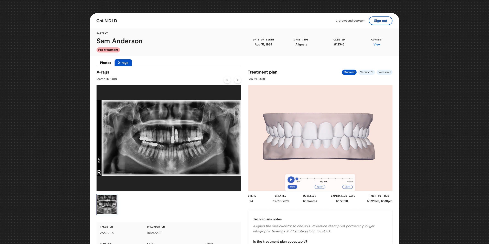

In November 2019, California passed regulation requiring online orthodontic providers to collect dental x-rays from patients by January 2020. This required sweeping changes to every customer touch point. I led design on this initiative.
Launched
December, 2019 ahead of new regulations
Description
When you do a massive chunk of your business in California and then California passes new regulations on your industry, you move fast.
This project was that. We had a short time table and we had some 60% of our business depending on it going well. In three or so months we had to implement support for x-rays across the product pipeline, from intake to orthodontist review. I worked directly with operations, legal, product management, copywriters, and engineers to make this happen.
- Literally saved the business from new Californian regulations
- Improved treatment outcomes by providing x-rays to orthodontists
- Appeased the orthodontists and provided them with robust tools to review and inspect x-rays
Why x-rays?
Moving teeth is hard. Orthodontists go to school for an extra 5 years over dentists to learn about the complexities of tooth movement, ligatures, bone-mass, and more. So, you could imagine that seeing under the surface is helpful for orthodontists, right?
Well, that depends on the type of treatment and the type of x-rays you're receiving. Orthodontists only care about panoramic x-rays and they're only truly useful if you're doing any sort of complex tooth movement. Candid's treatments were very simple.
That said, it was a no-brainer to comply for two reasons.
1. We need to do business in California.
2. It opens us up to do more complex treatments in the future!
Intake
As users signed up on the website and in the physical studio locations we needed to collect their dentist's information. This ensures a few things; that the user has been to the dentist recently (required for treatment), that the user doesn't have to collect the x-rays on their own, and finally that the x-rays are actually from the patient.
This is complex, however, from a legal standpoint as this must be HIPAA compliant. So, we had to have the users sign a release. A two step process tacked on right after conversion? No fun, but the best possible solution.
Orthodontist's tools
Now, what good are x-rays if your ortho doesn't even review them? No good at all! And also not legally compliant.
Thankfully I had just recently designed out a nice treatment plan review tool for orthodontists (the orthodontists absolutely lost their minds. Those cats love teeth. They called this beautiful. Pictures of people's teeth!) so adding x-rays on thankfully wasn't too hefty of a lift.
We had a few requirements:
1. Orthodontists needed to be able to review the x-rays
2. They couldn't approve the treatment plan until they reviewed the x-rays
3. They needed to be able to see all of them side by side with the treatment plan 3D model
4. They needed to be able to switch back to the photo grid, called a PRP (orthodontists take your whole head and shoulder shape into account)!
Conclusion
We were able to design and build support for x-rays across the entire Candid product at a breakneck pace and limited resourcing. I'm exceptionally proud of this project because it was mission critical, it went smoothly, and it got me in the room with experts in their own rights discussing hard to crack problems.
I was able to see not only the potential for design's impact at across the organization but also how powerful it is to have cross-functional collaborative environments.
I also learned so much about x-rays and teeth. Teeth are so weird. I hope you liked looking at some pictures of them on the case study.
Continue on to the next case study. Got questions? .
Next case study ⤏